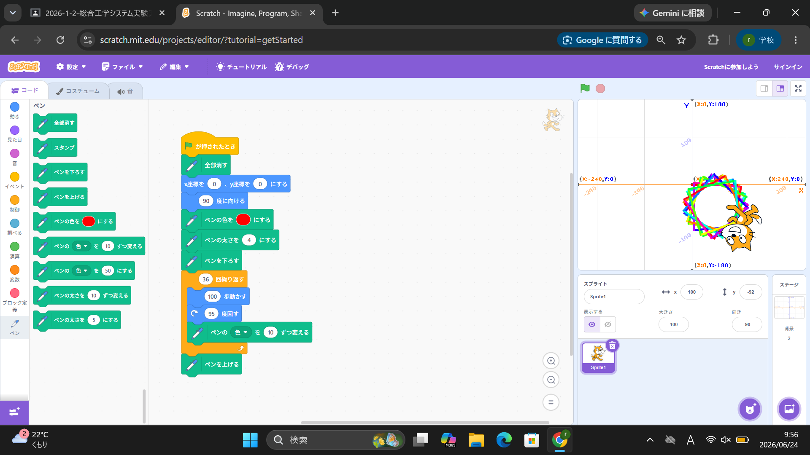
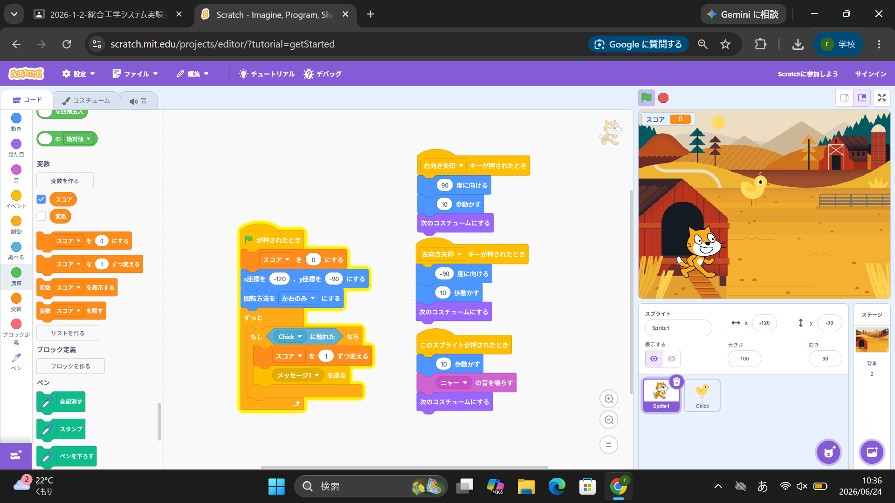

1週目のレポート ： 公大高専１年実習I-1
2a班10番 たいが
第1週目
1-1 サイエンスアート

1.内容
scratch上でブロックのプログラムを作り、サイエンスアートを作成した。
プログラミングの際は自分の作ったプログラムが
どのように動作するか頭の中で考えながらプログラミングするのが良い。
2.感想
小学校の時にペンの機能を使ったことがなかったから、初めてscratchで絵を描くことができました。
また、自分は数学が得意でないので難しかったです。
1-2 ゲーム

1.内容
scratch上で制御や変数など、様々なプログラムの機能を利用して、
上から落下してくるリンゴなどをキャッチするゲームを作成した。
2.感想
小学校の時に、スクラッチを利用し簡単なゲームを作成したことがあったから、スムーズにできたけれど、
文字などのプログラミングを以降学ぶときは時間がかかりそうだと思った。
1-3 ホームページ作成
私のホームページ
1.内容
githubのアカウントを作成し、ホームページを作成した。
githubを利用し、作成したサイトの編集方法も学んだ。
2.感想
githubは名前は知っていたけれど何ができるサイトなのか知らなかったから、とてもためになりました。
また、ホームページはすべてこの方法で作成されているのか気になりました。
各ページへのリンク
1週目のレポート
2週目のレポート
3週目のレポート
私のホームページ